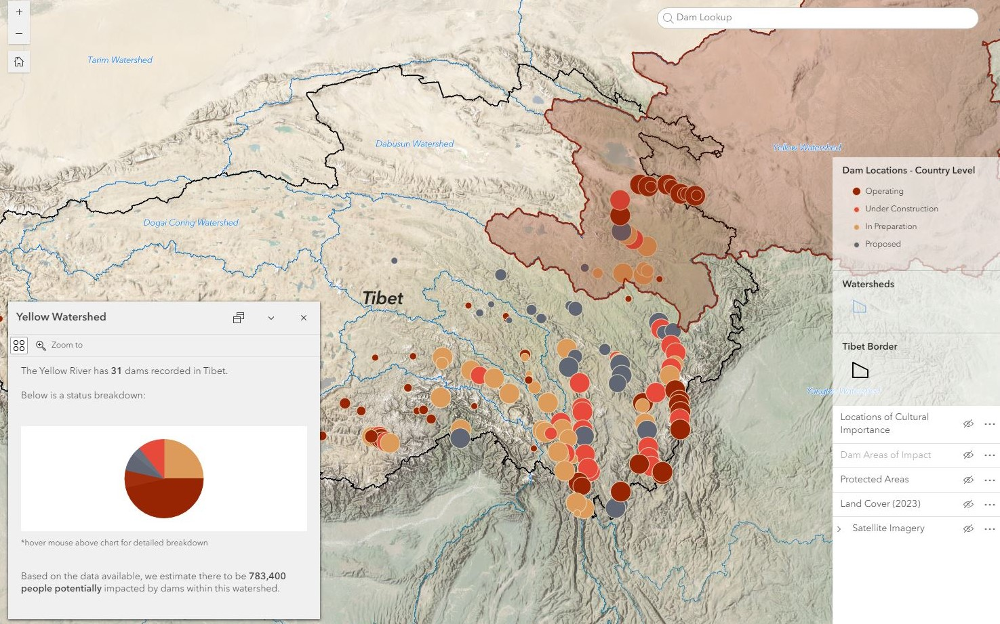

- December 2024 -
Hydro Dam Assessment
ArGIS Online | Arcade | Earth Engine
Led first-of-its-kind GIS project to visualize environmental and cultural impacts of Chinese hydropower projects in Tibet. Designed and published interactive map to ArcGIS Online, and static maps to integrate with written report.
Interactive Map- June 2022 -
Deforestation Analyses
Remote Sensing | Conservation Research

Analyzed 20 years of deforestation data, and the patterns and processes of forest loss in the Selva Maya. Received award for 'Outstanding Research Supporting Environmental Education' upon publication.
View Publication- February 2024 -
Arboretum Restoration
ArGIS Online | ArcGIS Pro | HTML

Published tree database to ArcGIS Online and redesigned website. Initiated research resulting in discovery of archival photographs from 1887.
Read Full Story- December 2022 -
Coastal Ecosystem Models
Remote Sensing | Google Earth Engine

Generated multi-temporal Land Cover Classifications for coastal habitats using neural network and Mahalanobis classifiers. Led team of Research Assistants, overseeing quality control for map classifications.
Explore Data- April 2022 -
Mangrove Trends
JavaScript | Time Series Analysis

Utilized historical Landsat data in Google Earth Engine to visualize Mangrove change over time in Myanmar.
Launch Web App- April 2020 -
Multicriteria Evaluation
Vulnerability Assessment | Landsat | Sentinel

Employed ArcGIS Pro to assess flooding vulnerability via multi-criteria evaluation. Completed final report ahead of deadline, and presented results using ArcGIS Storymaps.
Open Map- September 2019 -
Open Space Assessment
ArcGIS Suite | Field Work | Non-Profit GIS

Employed ArcGIS Pro to assess flooding vulnerability via multi-criteria evaluation. Completed final report ahead of deadline, and presented results using ArcGIS Storymaps.
Watch Video